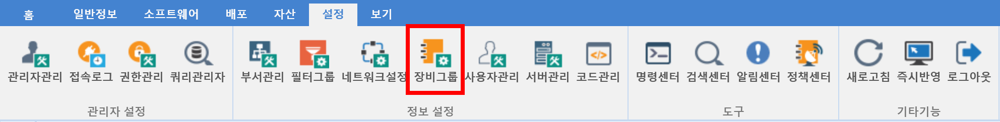
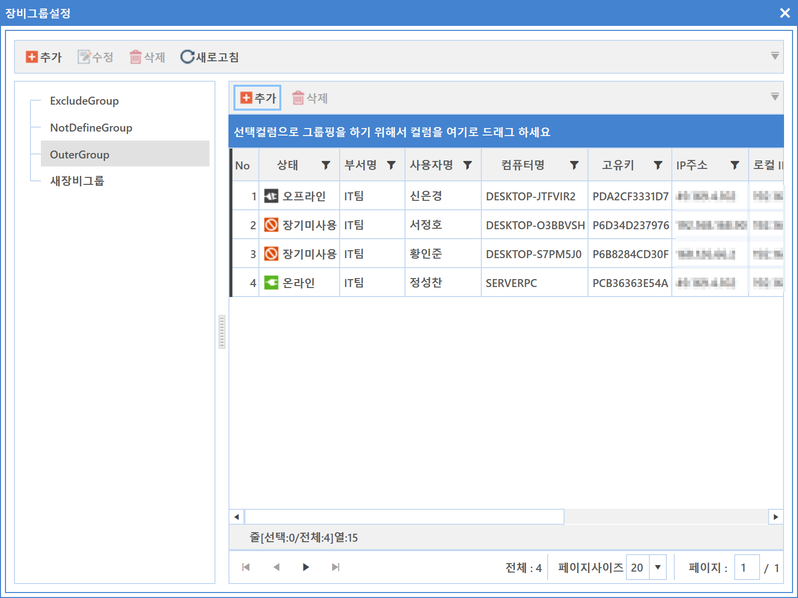
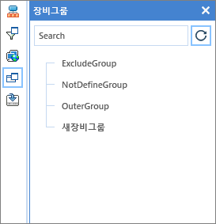

8-2-4. 장비그룹
8-2-4. 장비그룹
Source: https://www.sweeper.or.kr/etc/manual/8-2-4.html
8-2-4. 장비그룹
8. 설정 ›› 8-2. 정보 설정 ››


자산정책, 소프트웨어 정책등을 그룹으로 묶어서 에이전트에 적용하기 위한 정보를 설정합니다.


참고사항
- 본 메뉴에서는 프린트 기능이 제공되지 않습니다.
- 장비 그룹 설정은 장비를 원하는 그룹으로 묶기 위한 설정입니다.
설정된 장비 그룹은 조직도의 장비그룹에서 나타납니다.
